每天有 150-200 种物种 从地球上消失。
保护濒危动物，就是保护我们自己的未来。
每一个物种都是生态系统中不可替代的一环
每一个物种都在生态系统中扮演着独特角色。一个物种的消失可能引发连锁反应，破坏整个生态系统的平衡。
生物多样性是地球生命支持系统的核心。丰富的物种基因库为医学研究、农业发展提供了无限可能。
作为地球上最有智慧的生物，人类有责任保护与我们共享这个星球的其他生命形式。
许多物种蕴含着尚未被发现的科学奥秘，它们可能在医药、科技等领域带来突破性的发现。
它们正站在灭绝的边缘，需要我们立即行动
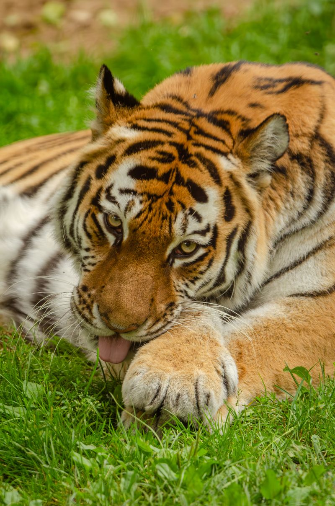
华南虎是中国特有的虎亚种，已被列为极度濒危物种。由于栖息地丧失和非法狩猎，野生华南虎几乎绝迹。
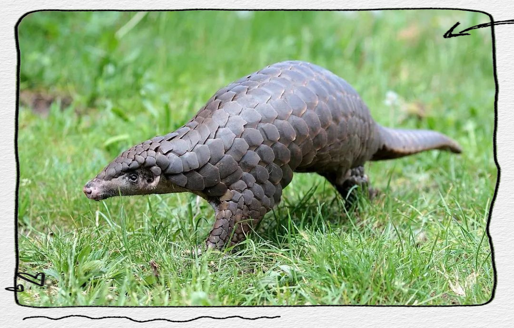
穿山甲是世界上被非法贩运最多的哺乳动物。它们的鳞片被错误地认为有药用价值，导致大量非法捕杀。
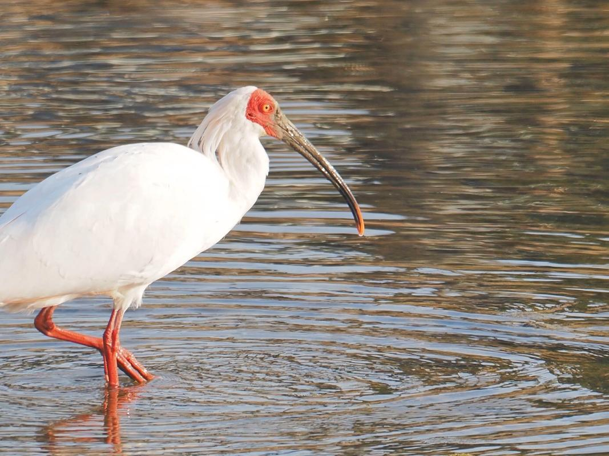
朱鹮被誉为"东方宝石"，曾一度被认为已经灭绝。经过中国科学家数十年的保护努力，种群数量逐步恢复。
以下动物正面临不同程度的生存威胁
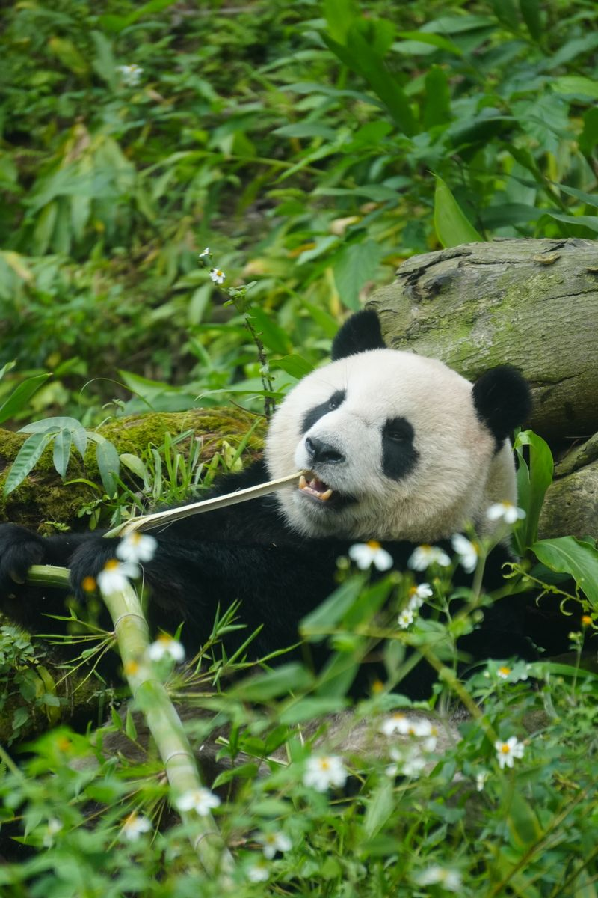
易危 VUAiluropoda melanoleuca
中国国宝，保护工作的标志性物种。野外种群约1,864只。
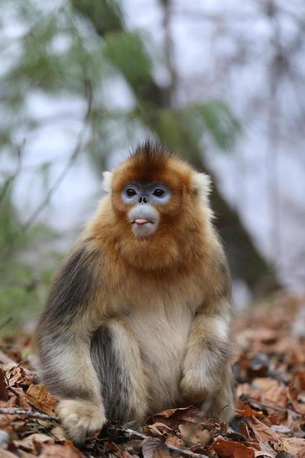
濒危 ENRhinopithecus roxellana
中国特有的珍稀灵长类动物，生活在高海拔森林中。
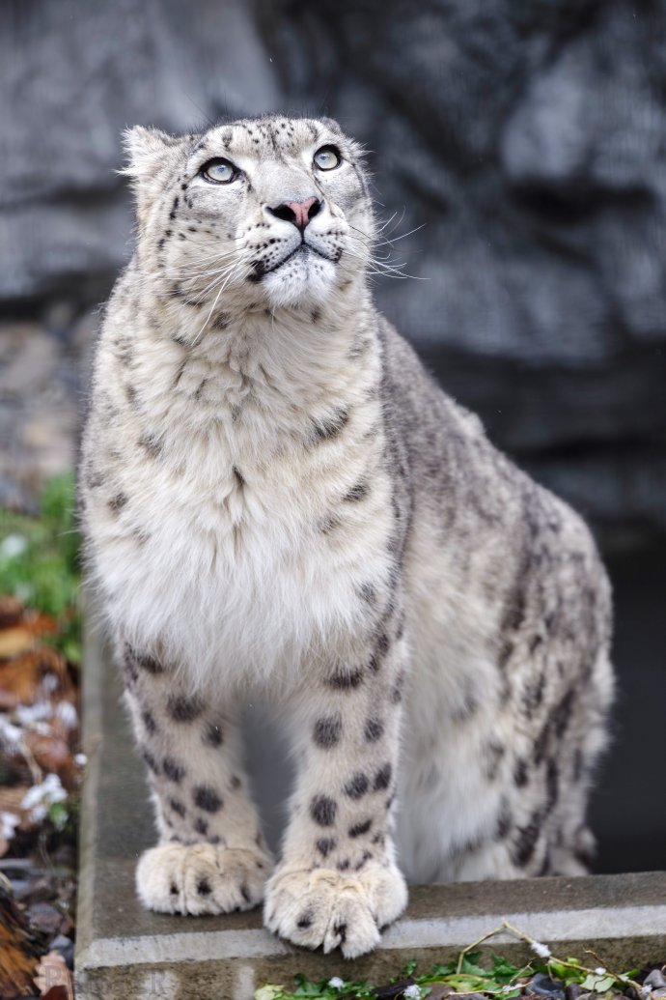
易危 VUPanthera uncia
"雪山之王"，生活在亚洲高山地区，全球约4,000-6,500只。
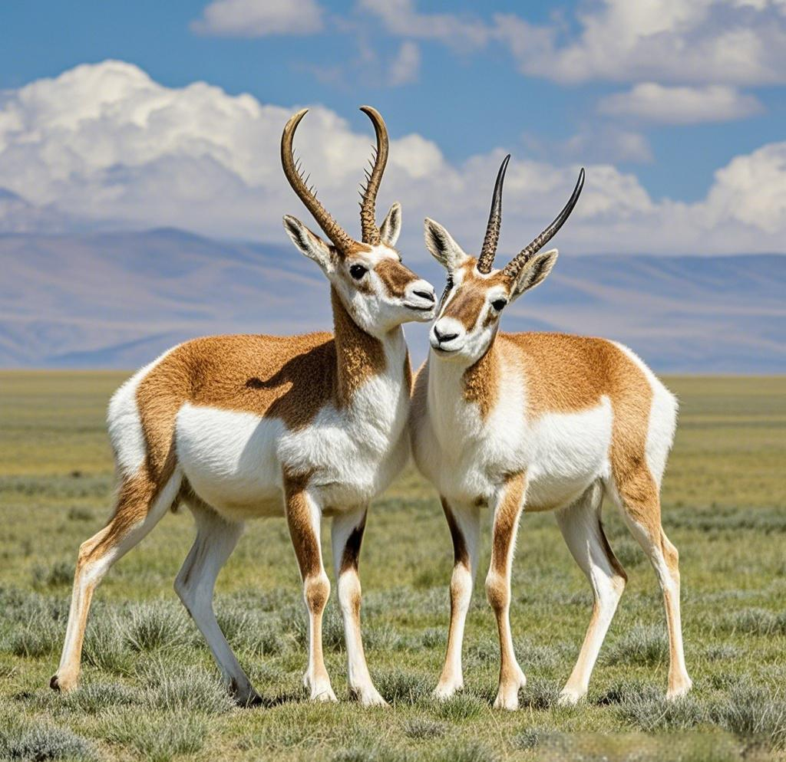
近危 NTPantholops hodgsonii
青藏高原的精灵，因沙图什披肩贸易曾遭大量猎杀。
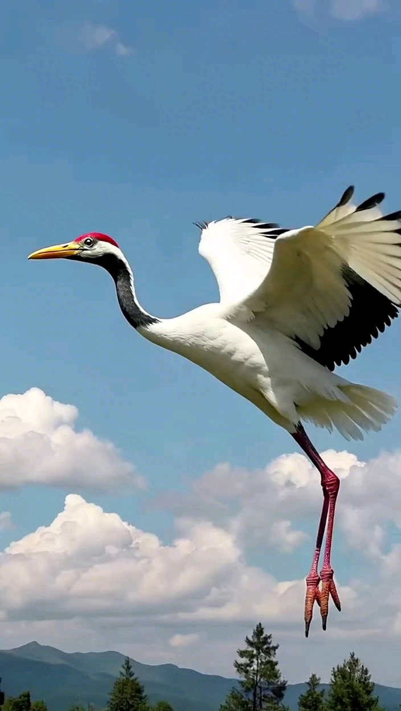
濒危 ENGrus japonensis
象征长寿与吉祥的仙鹤，全球仅存约2,700只。
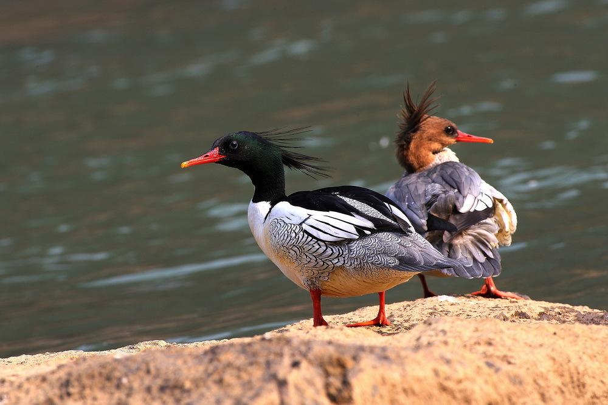
濒危 ENMergus squamatus
"鸟类活化石"，第三纪冰川期的孑遗物种，全球不足2,500只。
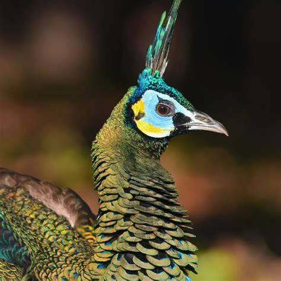
濒危 ENPavo muticus
中国原生孔雀，比蓝孔雀更加稀有，野外种群不足500只。
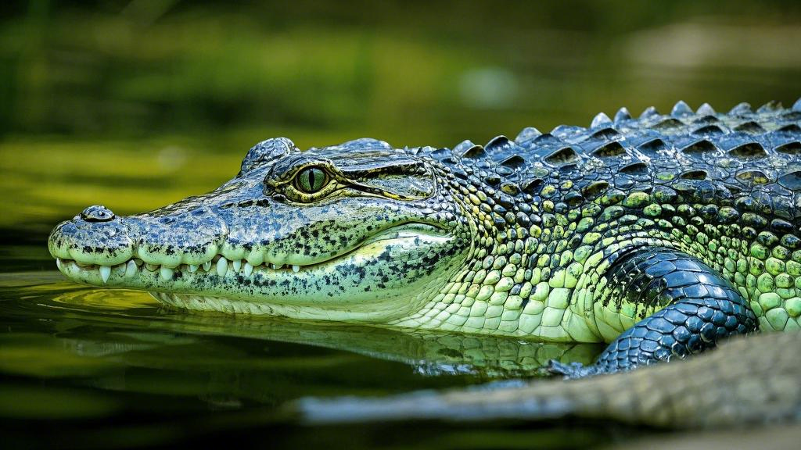
极危 CRAlligator sinensis
中国独有的小型鳄鱼，野外种群约150-200只。
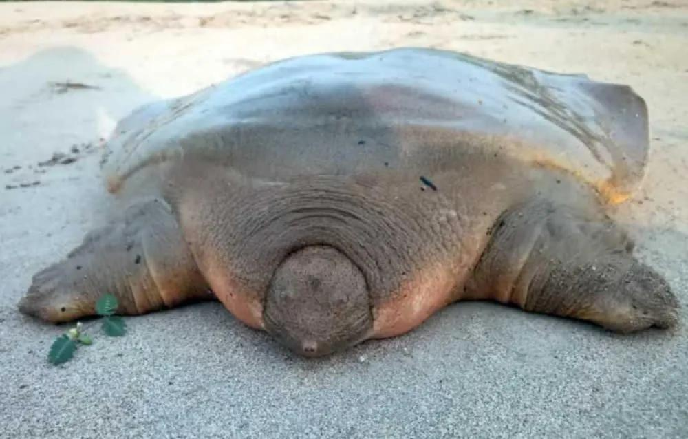
极危 CRPelochelys cantorii
世界上最大的淡水龟鳖之一，因栖息地破坏而极度濒危。
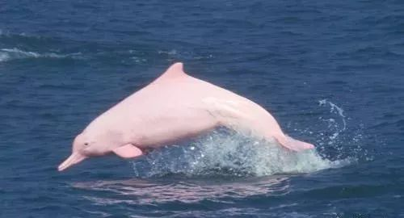
易危 VUSousa chinensis
"海上大熊猫"，珠江口种群约2,500只，受海洋工程威胁。
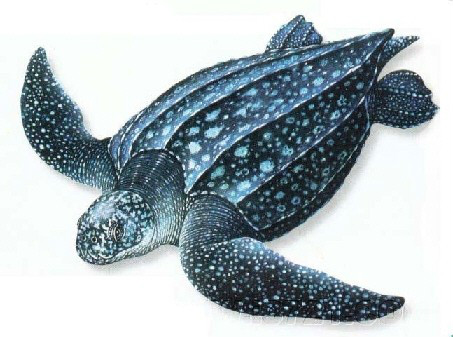
易危 VUDermochelys coriacea
世界上最大的海龟，因塑料污染和渔业误捕而面临威胁。
数字背后是一个个正在消失的生命
每个人的小小行动，汇聚成改变的力量
不购买象牙、犀角、穿山甲鳞片等野生动物制品，从源头切断非法贸易。
通过捐款、志愿服务等方式支持WWF、WCS等野生动物保护组织的工作。
减少一次性塑料制品的使用，防止塑料垃圾进入海洋危害海洋生物。
向身边的人分享野生动物保护知识，提高公众的保护意识。
选择可持续认证的产品（如FSC认证木材、MSC认证海产品），减少生态足迹。
通过iNaturalist等平台记录和分享野生动物观察，为科学研究提供数据。
加入保护行动，让我们携手守护地球家园
中国北京市朝阳区生态保护大厦 1208 室
info@protectanimals.org
+86 400-888-9999
周一至周五 9:00 - 18:00